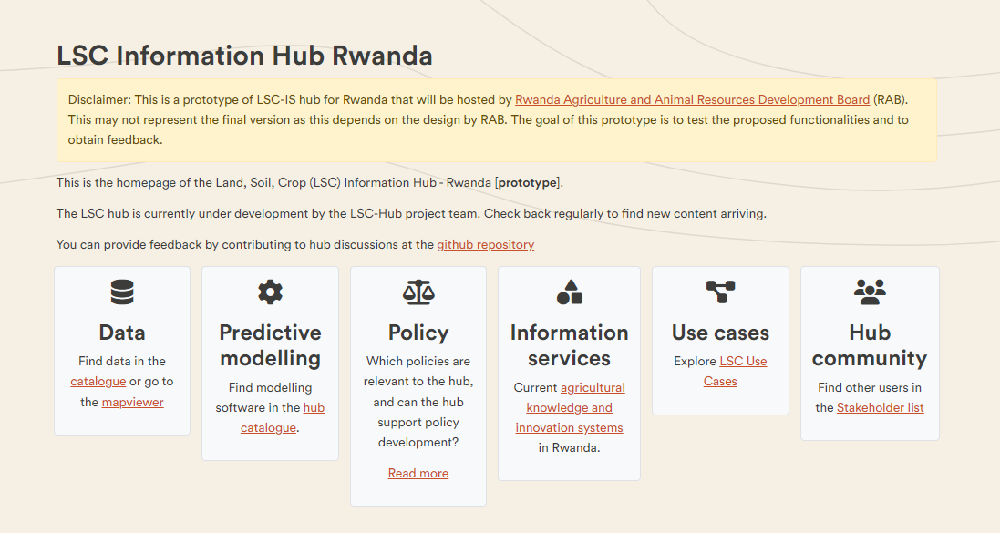
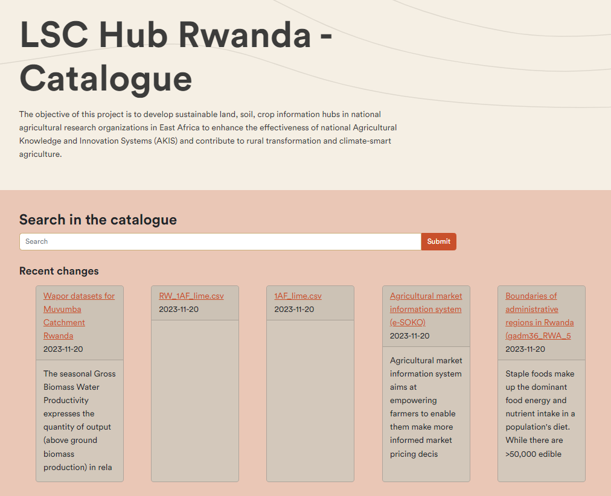
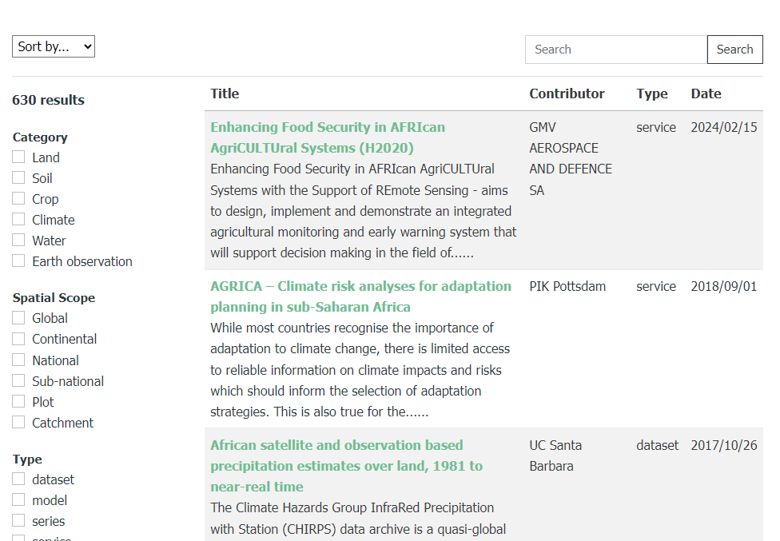
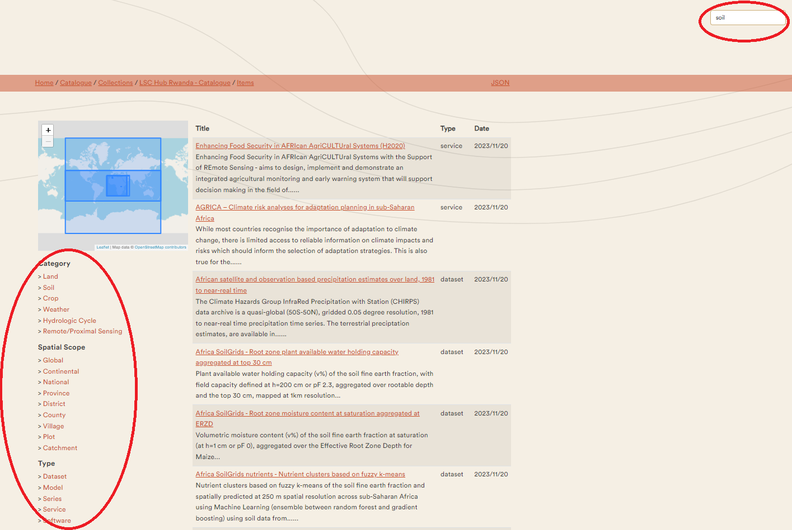
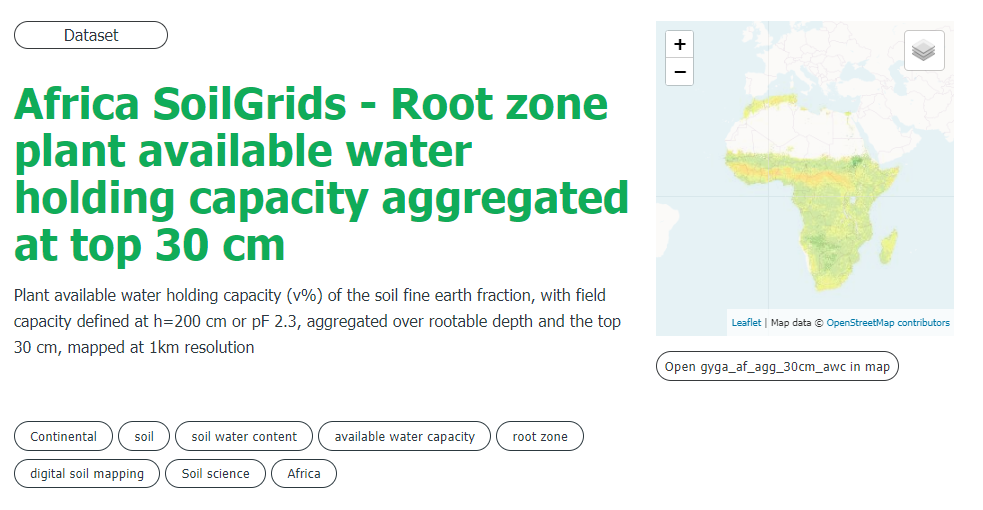
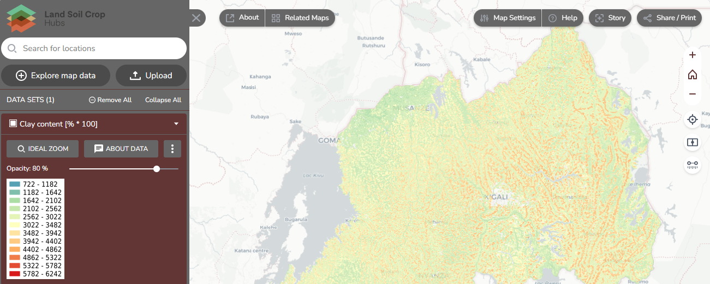
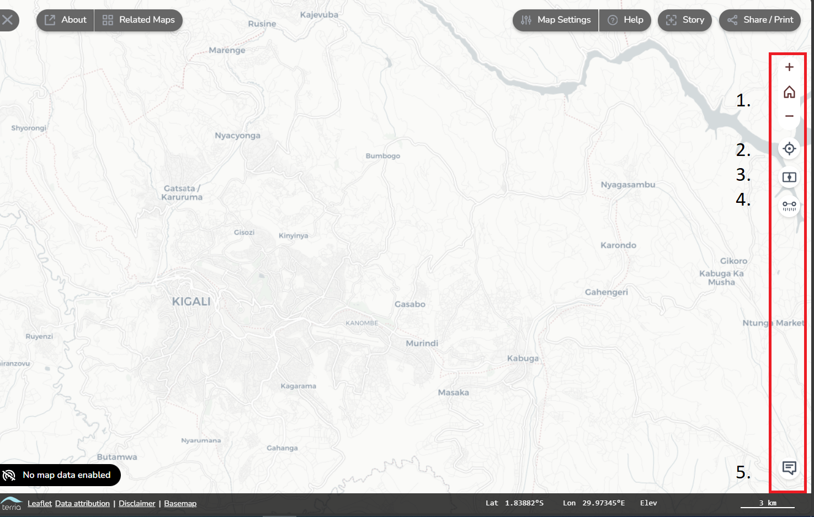
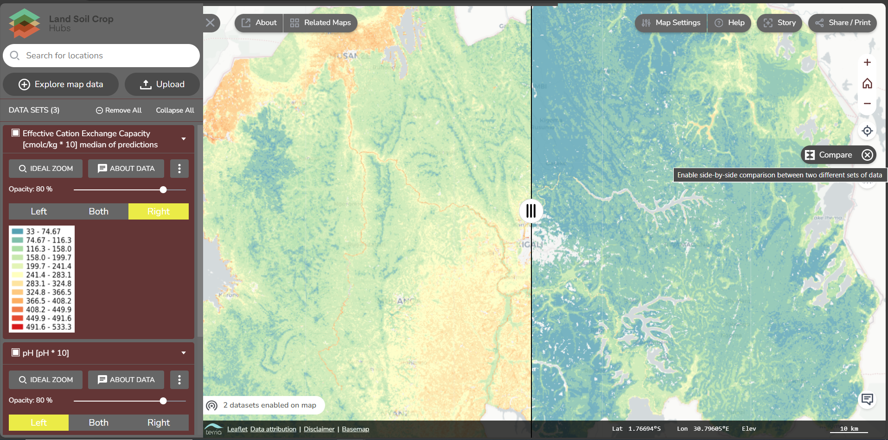
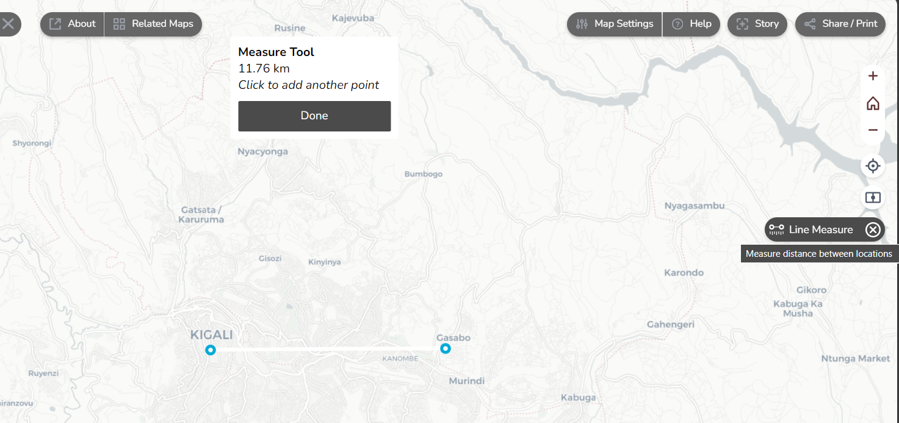
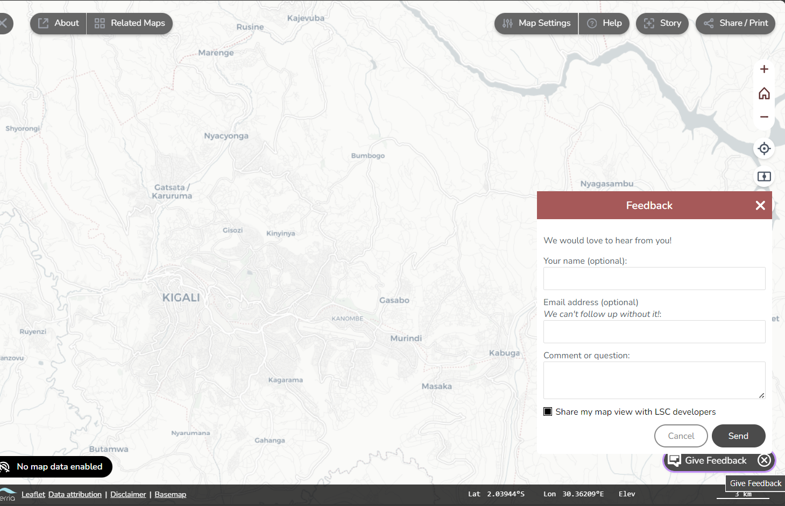

User Guideline LSC Hubs
This document is a guideline for the components of a LSC Hub.
A typical LSC hub consists of 3 components:
- A homepage providing a user welcome, project attribution and documentation;
- A catalogue which provides a search interface on the resources relevant to the hub;
- A map viewer section for easy access to data.
Moreover, there are 2 services important for the LSC hub: - Providing feedback to improve the LSC-hub - Providing Additional information to enrich the LSC-hub.
Homepage
The entry point of the hub is a webpage with general information about the project. The LSC-hub for Rwanda can be accessed at https://lsc-hubs.org/hubs/rwanda/.
When arriving on the homepage, you can see 6 sections: - Data to find data in the catalogue or go to the mapviewer - Predictive modelling to find modelling software in the hub catalogue. - Policy Which policies are relevant to the hub, and can the hub support policy development? - Information Services to find agricultural knowledge and innovation systems in Rwanda - Use Cases to explore the use cases of the LSC hub - Hub community to find other users in the stakeholder list

Exercise 1: Explore the homepage of the LSC hub. Click on the links and explore which info is in there.
Catalogue
The central catalogue contains references to all relevant resources in the hub. The catalogue of Rwanda can be reached by clicking under DATA on Catalogue or directly by https://rwanda.lsc-hubs.org/

When you click on submit, the available records will appear.

Resources are categorised into:
- Datasets
- Software
- Model
- Services (Web services, APIs, SMS, phone and onsite services)
The catalogue allows the filtering of keywords. The 3 main keywords are: 1. category ( such as soil, crop, etc.), 2. spatial scope (such as Global, National, district, etc. ), 3. the type (such as dataset, software, etc).
Second, any other keyword linked to the resource can be used to search in the catalogue, for example, land use or crop yield. This depends on which keywords are given to the resources.
Exercise 2: Try the keywords. Type in the search bar various keywords, such as soil or Land use or click on the keywords on the side.

For each record, a number of metadata properties are provided, such as abstract, used datasets, keywords, usage constraints, and contact information.
Some records link directly to the map viewer component. Under the image, it will say: Open record in the LSC map and you will be directed to the map viewer.
Exercise 3: Explore the records. Click, after searching on keywords, on one of the appeared records and explore the provided information. Click on the links in the records

Map viewer
Spatial data can be viewed and compared in a web-based map viewer. The map viewer can be accessed on the homepage of the LSC hub, under DATA and then click on Go the map viewer. The map viewer can also directly be accessed at https://maps.lsc-hubs.org/#lsc-rwanda

The map viewer can used for the visualisation of existing maps listed in the LSC catalogue, your data and web data. In this guideline, we will take you through the available functionalities of the map viewer.
Vertical toolbar on the top right
The vertical toolbar allows you to zoom on the map or location, compare maps, measure distance and provide feedback. Each of the buttons will be explained below.

Zoom in and out, and back to a full world zoom
Zoom to your current location
Compare two map data side-by-side. In the next section on explore map data. 
Measure the distance on the map between two locations. 
Provide feedback on the map viewer. Feedback is essential to improve the map viewer and to ensure that the map viewer fits the user’s needs. If you have any feedback on the map viewer, you can give it by this button. 
Exercise 4: Explore the basic settings of the mapviewer. Change the map settings, take the tour at the help button, download your current map, measure distances and go to your location.
Feedback to LSC hub
Notice that every page or resource on the hub provides an option to provide feedback and/or ask a question related to the content. Contributions to the hub require a Github login.
Additional information
The stakeholders keep ownership in the LSC hub. The catalogue can be linked to various information sources, without that the data is stored on the LSC hub. Therefore, if you know existing information sources that are missing and should be added, there is a way to add the information by using an ODK form.
An Open Data Kit (ODK) form is a form that provides a structured way to collect and provide information. Typically forms are used by data collectors via an online link. The LSC-hub ODK form can accessed by: ODK form LSC-IS